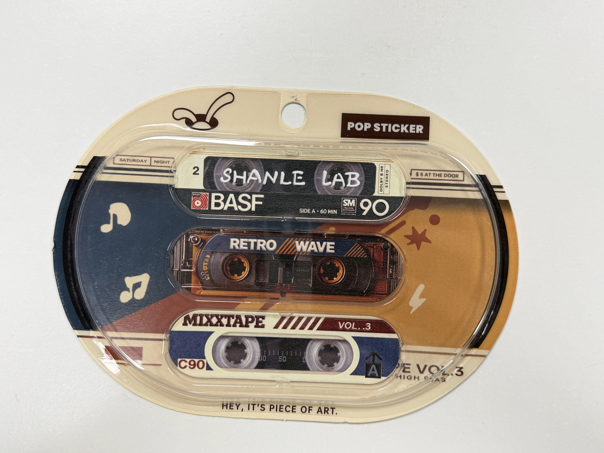
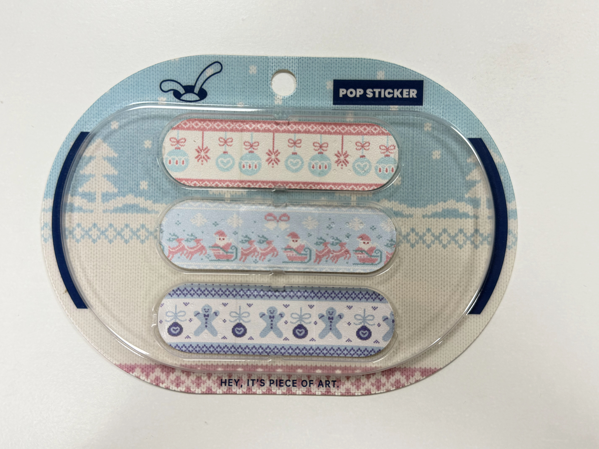
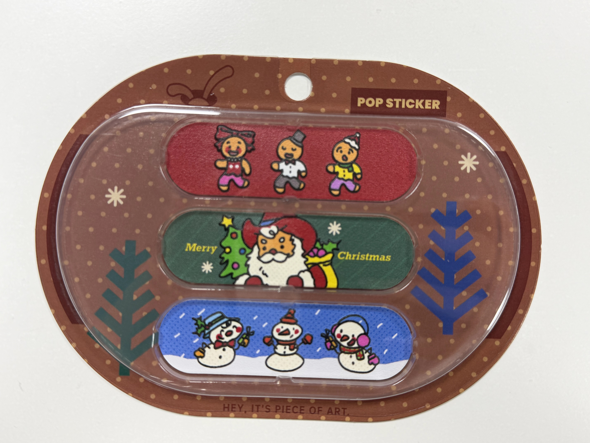
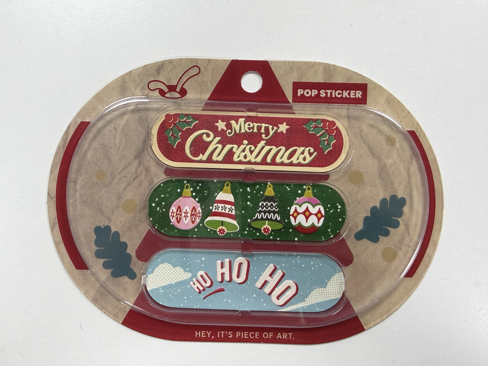
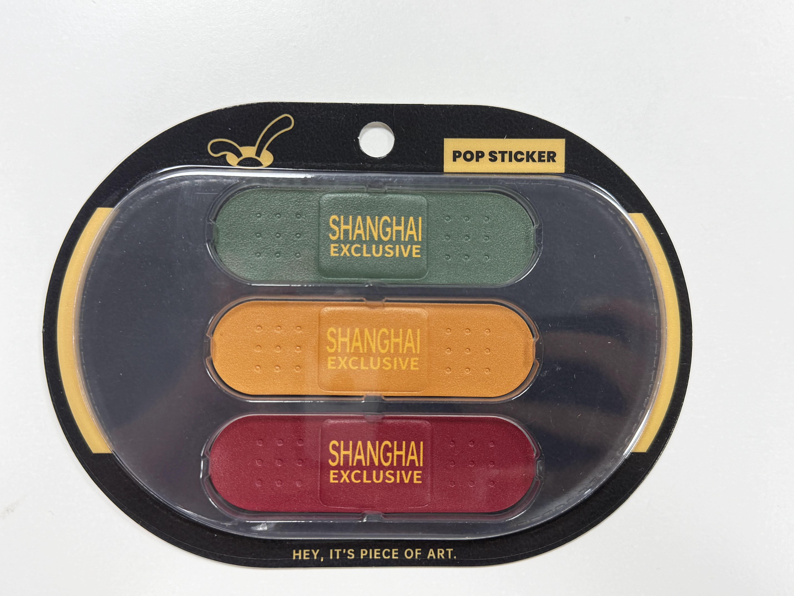

SHANLE LAB × niko and ...CHRISTMAS COLLECTION
给生活贴一点喜欢。
Little things. Close to you.
01
一首听了很多遍的歌，一件舍不得收起的毛衣。
那些细小的喜欢，也能接住忙碌的一天。

让喜欢的歌，跟着你。RETRO MIXTAPE

把暖意，织进日常。WINTER KNIT

再忙，也记得过节。CHRISTMAS COMPANY

让节日，多停留一会儿。CHRISTMAS KEEPSAKES
这次联名，我们从日常里令人留恋的片刻出发，把音乐、冬日与节日的快乐，放进小小的 POP STICKER。
磁带留下旋律，针织纹样留下暖意，姜饼人、雪人和铃铛，则留下岁末相聚的心情。每一种图案，都对应着一种熟悉的喜欢。
我们借用创可贴的形状，也借用它所代表的关照。生活偶尔有些磕碰，“为生活止痛”，是想在那些忙乱、疲惫的时刻，给自己留一点温柔的余地。
贴在随身的小包或护照夹上，让熟悉的物件多一点自己的样子。等圣诞灯收起来，那些被你选中的喜欢，仍然在身边。
给生活贴一点喜欢。也给自己，多一点关照。
A favourite tune, a familiar warmth, a little festive cheer.
Small comforts to carry with you, long after the season has passed.
创作手记 / THE IDEA BEHIND THE COLLECTIONSHANLE LAB · 01
SHANLE LABSHANGHAI EXCLUSIVE · EARLY RELEASE
好东西，想先给你。
Something good. Yours a little sooner.
02
看到一件喜欢的东西，就想起了你。
这份礼物，从这样的心情开始。

上海限定 / SHANGHAI EXCLUSIVE
这一次，超前首发的「上海限定」POP STICKER，提前在「生活止痛包」里与你见面。
这一款收起繁复的图案，让颜色、表面的纹理与创可贴本身的轮廓成为主角。墨绿、暖橙与酒红，为冬日留下三种表情；中央的“SHANGHAI EXCLUSIVE”，为这次相遇写下地点。
它可以属于在上海生活的人，也可以被偶然经过的人带走。贴在随身的小包或护照夹上，便留下一个小小的记号：某个冬天，我们曾在这里遇见。
把它提前放进礼盒，是想把“先分享给你”的心情，也一起装进去。你将比正式发售更早，与这份新鲜的喜欢相遇。
小包承接日常，贴纸留下你的选择，而这份提前到来的新作，让礼盒多了一句没有说出口的话：刚发现的好东西，想让你先拥有。
从拆开礼盒，到贴上随身的物件，创作开始走进你的生活。它会陪你经过通勤、约会和旅行，慢慢与那些普通却具体的日子联系在一起。
这个冬天，先把喜欢送给你。
愿它陪你，走过更多日常。
A new discovery, shared with you a little sooner.
A gift for this winter. A little joy for the days beyond it.
礼盒里的心意 / A NOTE INSIDE THE GIFTSHANLE LAB · 02